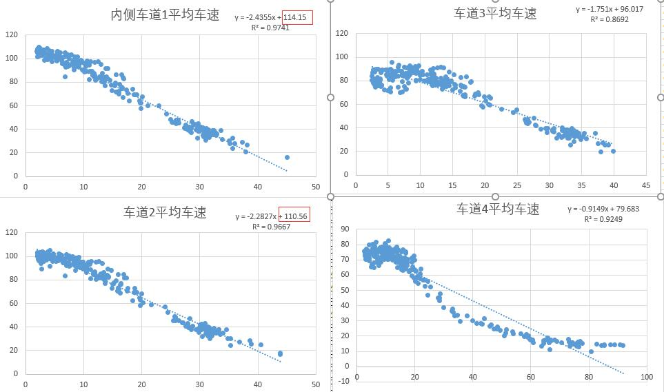
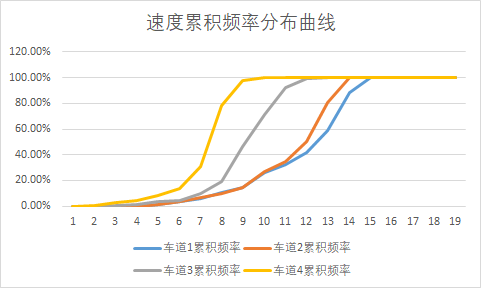
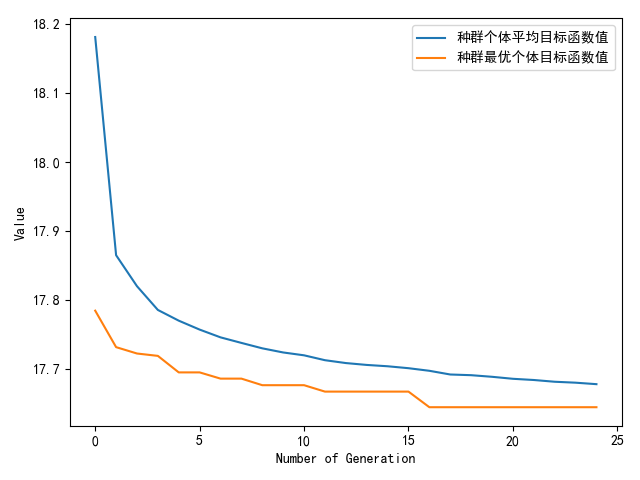

使用遗传算法标定VISSIM 4.3
GITHUB真是个好东西，最近在GITHUB的帮助下，我第一次接触了使用Python调用VISSIM 4.3 COM接口的方法，尽管在其官方文档中没有对此进行详细说明，不过还是可以通过AttValue()和SetAttValue()函数调用API里边的函数。
环境准备
首先准备环境
- VISSIM 4.30
- Pycharm 2019.03
- Python 3.5
需要的包（学到一招，Pycharm里可以在File->Setting里搜索想要的包并导入）
- geatpy 2.2.3 用来调用遗传算法
- win32com 用来调用com接口
- numpy 是该遗传算法包的依赖
- xlrd 用来读Excel表的
标定方式概述
目前针对传统微观交通跟驰模型的标定方法主要有两种： 一种是宏观标定，即根据道路中的固定检测器，包括微波、线圈等统计的流量、速度、行程时间等信息，另一种是微观（轨迹）标定，根据航拍（最近几年一般用无人机）得到车辆的轨迹，通过车辆的轨迹数据进行标定。很显然，轨迹标定方法更为精确，不仅可以标定出跟驰的特征，也可以包含换道的信息。但是无人机也有缺陷，一次只能拍一个地点，而且续航时间有限。具体而言，选取哪一种标定方法还是由手头的数据决定的。
数据处理
小时交通量处理
我手头有一个检测器1日的数据，原始数据是每5分钟统计各条车道的车速、以及通过车辆数。首先对该数据进行集计，统计成15分钟车速、车道通过的车辆数数据、大车比例，再通过集合各车道通过车辆数数据，加以扩样得到每15分钟统计一次的 断面小时交通量 这里不再是15分钟流量，是由于VISSIM中设置车辆输入都是以小时交通量为单位。
车道速度处理
随后对车辆车速分车道进行集合统计，得到分车道的速度频率分布累计曲线，这个曲线还是蛮重要的 ，决定了自由流状态下，车辆运行的期望车速分布。查看原始数据，我们可以发现原始数据不仅包含了自由流状态，还包含了拥堵状态，显然拥堵状态是不能作为期望车速输入的。
将拥堵状态和自由流状态分开
首先使用车道流量Q、速度V计算该车道的车辆密度k，利用的是交通流基本关系Q=KV
在Excel中直接选中所有车道速度，绘制K-V散点图，绘制之后可以用直线拟合趋势线，拟合后我们可以发现用直线拟合程度就比较好，各个车道K-V关系拟合R²都在0.85以上。于是我们可以拍一拍脑袋，认为该路段各车道交通流服从格林希尔德模型。拟合出来的直线显示截距，截距就是自由流车速vf（K=0时的速度），vf/2就是拥堵和自由流的临界。

统计速度在各区间内的频数
使用vf/2为临界，筛选出大于vf/2的速度数据，放到另一张表中，进行分段统计，分段长度可以采用10，如果你比较细心也可以用5。
这里有一个小技巧，分段需要用到EXCEL中的FREQUENCY函数，首先选中一列，然后输入函数公式后按ctrl+shift+enter可以填充该列。
最后计算各个区间内的比例，并进行累加，就可以得到速度频率分布曲线，我们在VISSIM中新建4个期望速度分布曲线，把我们得到的4个数据按图索骥画进去。

VISSIM 设置
设置不同车道的期望车速曲线
这里又有需要注意的地方，在VISSIM中，车辆输入的时候是不能输入车道级的期望车速分布，那么问题就来了，我的车辆在一条4车道高速上，怎么样保证他在不同的车道上有不同的期望车速分布呢？我们可以通过设置期望速度决策点来修改不同车道的期望车速。然而，由于路网中的车辆会进行选择性换道，进行选择性变道后，车辆通过上一个期望速度决策点的期望车速会保留到换道后，这就和我们期望的不一样。想要解决也很简单，一个期望速度决策点不够，就来几个。
设置LINK的类型
这个要特别拿出来说一下，天坑！！原来通过一番设置之后代码都跑起来了，可是发现程序每次变换随机参数跑出来的结果都一样（不管调成啥都没用），整整想了一个晚上挠掉N多头发才发现是我LINK的类型选成了城市道路！！！也就是说我调了一晚上高速路的模型参数，压根就没在路网中生效，还我头发啊啊啊啊！！！！

就是这个，要选成3 Freeway 才有用
设置LINK车道限行
这个还是要和实际相符，国内大部分多车道高速都禁止大货车在最内侧车道通行，如果是4车道高速，一般会只让大货车在最外侧两条车道运行。在VISSIM里上面那个界面点Lane Closure 然后把Lane3 和lane4 对HGV关闭（VISSIM最右边车道是1 所以应该关闭lane3 和lane 4）

设置评价
评价也是一个大坑，在4.30版本的VISSIM中，如果你不打开评价，仿真他也不会报错，而是会输出0.00这样令人摸不着头脑的数据，掉无数头发后，才能想到 哦是评价没打开。由于需要检测车辆数和速度，这里要点选上两个数据。同时要注意时间是从900s开始统计，集计间隔也是900s。

这里为了演示只搞了1个检测器，实际上检测器个数肯定不止一个，VISSIM里一个检测器只能看一条车道的数据
遗传算法准备
首先要介绍下遗传算法，有一段解释特别有趣形象：
从前，有一大群袋鼠，它们被莫名其妙的零散地遗弃于喜马拉雅山脉。于是只好在那里艰苦的生活。海拔低的地方弥漫着一种无色无味的毒气，海拔越高毒气越稀薄。可是可怜的袋鼠们对此全然不觉，还是习惯于活蹦乱跳。于是，不断有袋鼠死于海拔较低的地方，而越是在海拔高的袋鼠越是能活得更久，也越有机会生儿育女。就这样经过许多年，这些袋鼠们竟然都不自觉地聚拢到了一个个的山峰上，可是在所有的袋鼠中，只有聚拢到珠穆朗玛峰的袋鼠被带回了美丽的澳洲。
这里的山峰就是优化问题的最大化问题，当然问题也可以是找一个低谷（最小化问题）
我们使用遗传算法，目的是使我们的输入（模型中不同的参数）得到的形成速度、通过车辆数的仿真结果与真实结果差异最小，用数学公式表达，可以写成
$$
min z=sum(|v_s-v_t|/v_t+|Nveh_s-Nveh_t|/Nveh_t)
$$
这里我们是使用了geatpy上的一个模板，仅对编码方式从’BG’ 改为’RI’ （三个参数都是实数范围求解），其他改动不大
直接贴代码：
main.py
1 | # -*- coding: utf-8 -*- |
MyProblem.py ：用来描述问题
1 | # -*- coding: utf-8 -*- |
对于VISSIM 来说，一般Weidemann99跟驰模型，可调整的参数一共有9个CC0-CC9，不过一般调CC0 CC1 CC2三个参数即可，通过定性分析（pai nao dai），我们认为其他参数不太敏感。
对于6.0+版本，还可以调整换道参数，按理说换道参数有一些也是需要调整的，不过在4.3中没有开放换道参数的接口，这里简化起见，我们采用默认参数，仅对“同时观测的车辆数”进行调整，从2调整为4
上述代码常见错误会有： 输入的数组应该是n行1列的numpy array 矩阵，看着就令人头大，处理方法是不能用原来python的数组，应该用np.array系列的数组，经过一段时间的试验后发现还是numpy里的vstack函数靠谱
最终结果：
1 | 种群信息导出完毕。 |
CC0=1.6210104341403664 CC1=1.0379648617231827 CC2=2.258785180700528

TO DO:
- 后续可能会出个6.0+版本，4.3和6的调用还是有很多不一样的地方，很多函数名都变了
- 最优化的函数一般用的是均方根相对误差
- 应该随机5次比较合理，但是耗时太长，可以通过缩小种群规模提高效率
- 总体来说效率还是低了些 不过并非不能接受吧
参考资料
- Geatpy官方文档 （https://github.com/geatpy-dev/geatpy）
- VISSIM 4.30 API 文档
- 杨神写的代码，使用遗传算法标定VISSIM9，学（膜）到了思想 （https://github.com/TransUMD/VISSIM-Calibration-via-LHD-GA）